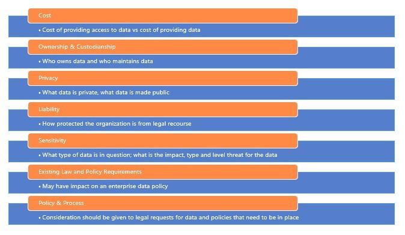
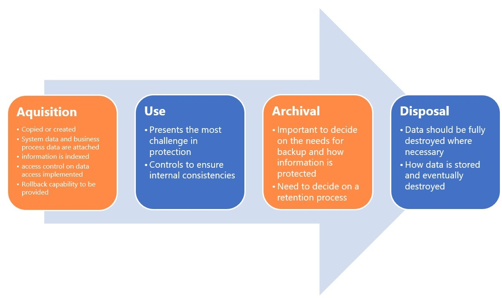

Introduction
bb1840e4-5425-49a3-9d75-477b8f016ff8
Welcome to the Data Protection Implementation Practice Lab. In this module, you will be provided with the instructions and devices needed to develop your hands-on skills.
dc640c20-9434-45ea-b7c2-6d4d6a196bfc
Learning Outcomes
In this module, you will complete the following exercises:
- Exercise 1 - Data Breach
- Exercise 2 - Data Classifications and Privacy Enhancing Techniques
- Exercise 3 - Organizational Roles and Responsibilities for Data
- Exercise 4 - Information Life Cycle
After completing this module, you should have further knowledge of:
- Consequences of Privacy Breaches
- Data Breach Notification
- Identify Different Data Types
- Data Classification Guidelines
- Privacy Enhancement Techniques
- Roles and Responsibilities
- Information Life Cycle
Exam Objectives
The following exam objectives are covered in this lab:
5.5 Explain privacy and sensitive data concepts in relation to security.
- Organizational Consewuences of Privacy Breaches
- Notifications of Breaches
- Data Types
- Privacy Enhancing Technology
- Roles and Responsibilities
- Information Life Cycle
- Impact Assessment
- Terms of Agreement
- Privacy Notice
Lab Duration
It will take approximately 45 minutes to complete this lab.
6cde82b4-969e-4ba2-9a1b-b030a82e21d0
Help and Support
For more information on using Practice Labs, please see our Help and Support page. You can also raise a technical support ticket from this page.
Click Next to view the Lab topology used in this module.
d2c53300-f951-45a9-9aa4-3d4ecae69e11
Lab Topology
This module contains supporting materials for Security+.

Click Next to proceed to the first exercise.
<
Home |
README >
CompTIA Security+ Practice Labs
Exercise 1 - Data Breach
A data breach occurs when unauthorized users or
attackers gain access to sensitive, confidential or private data.
Following a data breach, a privacy impact assessment is conducted to
determine the breach's damage.
Learning Outcomes
After completing this exercise, you should have further knowledge of:
- Consequences of Privacy Breaches
- Data Breach Notification
Your Devices
This exercise contains supporting materials for Security+.

Consequences of Privacy Breaches
If not addressed properly, a data breach could result
in material or non-material damage to organizations, such as loss of
control over data, identity theft or fraud, financial loss, damage to
reputation and loss of data confidentiality, etc.
Often the direct consequences of a data breach are
reputation damage and loss of trust. This could in turn, lead to costly
fines and penalties for the lost data.
A data breach can occur in various ways. Some common forms are:
- Access by unauthorized users or attackers
- The unintentional or intentional release of data by data controllers
- System or devices lost or stolen that contains sensitive data
- Unauthorized alteration of data
- Loss of availability of data
Data Breach Notification
Different countries have different guidelines for
reporting a data breach. As a general guideline, organizations should
report a data breach no later than 72 hours after the breach is
identified to a Supervisory Authority. It is also mandatory to inform
affected individuals without delay if the breach results in a high risk
affecting individual rights.
A data breach notification must include:
- Number of individual records concerned
- Consequences of the breach
- Measures to mitigate the damage
Communication Strategy
Determine what should be communicated to different
stakeholders like associates, clients, business partners, employees and
the public.
Formulate a statement for employees to ensure everyone is on the same page.
Formulate a statement for the press
Once your official statements are prepared and
distributed, it is recommended to keep an open line of communication - a
24/7 hotline for a few days for the clients and customers affected.
A data breach of a company’s data could result in the
loss of confidentiality, integrity, and data availability. The loss of
confidentiality occurs when the data is accessed by an unauthorized
party with malicious intent to share it with other parties. The loss of
integrity of data occurs when the original data is modified or altered;
this may result in the possibility that the modification can cause
damage to the company systems or the user accessing the data. The loss
of availability can be described when access to the original data is not
possible when is needed.
The malicious intent element examines whether the data
breach that occurred was accidental or intentional. A non-malicious
data breach can be caused by some of the following occurrences,
accidental deletion of data, inadequate data disposal, human error, or
an application's misconfiguration.
A malicious breach includes data theft cases, hacking
of a company's system, or aiming to harm individuals by gaining access
to their private information.
<
Home |
README >
CompTIA Security+ Practice Labs
Exercise 2 - Data Classifications and Privacy Enhancing Techniques
Data classification denotes the practice of
classifying different types of information assets and providing some
guidance as to how they must be secured. It is a continuous process and
not a one-time effort. The classification level must always be attached
throughout the lifecycle of the information.
Learning Outcomes
After completing this exercise, you should have further knowledge of:
- Identify Different Data Types
- Data Classification Guidelines
- Privacy Enhancement Techniques
Your Devices
This exercise contains supporting materials for Security+.

Identify Different Data Types
Data can be classified as both private (confidential)
and public based on the value it holds. Some organization’s also refer
to private information as sensitive. Other forms of data classification
could be based on regulatory standards or the industry sector. Data can
also be classified as PII (Personally Identifiable Information), PHI
(Protected Health Information) etc.
Understanding Sensitive Data
The First step in Asset security is to classify and
label the asset based on its value. The value assigned to an asset is
specific and considers tangible costs (e.g., purchase cost) as well as
intangible costs (e.g., reputation). Data is the most important asset in
any organization.
What is Sensitive Data?
- Any data that is not public
- Any type of data that an organization has value upon and must secure or adhere to law and regulations
Personally Identifiable Information
Any information can identify an individual’s race,
name, SSN, date, place of birth, biometric, medical, financial or
employment information.
Protected Health Information
- Health-related information that can be related to an individual
- Oral or written information created or received by healthcare-related entities
- Relates to past, present or future medical information of an individual
Proprietary Data
- Any data that helps an organization to maintain a competitive edge
- If lost, it can seriously affect the primary mission of an organization
Classification
- Recognizes the value of the data to the organization
- It also finds how data owners can identify the proper classification, and personnel must protect data based on classification
- The classification authority is the one who implements the actual classification to the sensitive data
Categorization
- Method for identifying the impact due to the loss of
CIA (Confidentiality, Integrity and Availability) of data to an
organization
- Classification helps set baselines for information systems
Information Classification
Information is classified by sensitivity, criticality or both.
Sensitivity:
- Loss to an organization if the data is revealed to unauthorized entities
- If organizations lose trust and spend more efforts on mitigation in response to loss.
Criticality:
- Indicator of how the loss will affect the basic business processes of the organization
- It is that which is necessary for the organization to continue business
Data Classification Guidelines
When classifying data, take into consideration:
- Who has access to information
- How the data is protected
- How long the data is kept
- What approaches are used to dispose of the data
- Whether data needs to be obfuscated
- What use of the data is relevant
- Keep the categorization small
- Categorization must not be restrictive
- Each categorization should be distinct and separate from others; no overlap effects
- Should denote how data is controlled and handled through its life cycle
Data Classification Steps
1. Define Classification Levels
2. Criteria of classification levels
3. Information owners who will be responsible for the categorization
4. Data custodians who are responsible for retaining data
5. Security controls for each classification level
6. Exception documentation to previous classification issues
7. Methods to transfer data ownership
8. Method to periodically review the classification and ownership
9. Declassification procedures
10. Classification awareness to all employees
Types of Data Classification
Data in which disclosure is not welcome but does not impact the organization is called public data.
Data that requires special precautions to ensure
confidentiality, integrity and availability and protection from
unauthorized access is called sensitive data
Personal information that is to be used within the organization is referred to as private data.
The confidential or proprietary label refers
to any information that helps an organization maintain a competitive
edge. In other words, disclosure of the information would cause grave
damage to an organization's primary mission. This can include trade
secrets, intellectual property, sales and marketing plans, financial
data, etc
Personally identifiable information (PII) is
any information that can identify an individual, such as name, Social
Security number, date and place of birth, etc. “Individuals” includes
employees as well as customers.
Protected health information (PHI) is any
health-related information related to a specific individual, such as
health information, healthcare provider, health plan, life insurer, etc.
Privacy Enhancement Techniques
Pseudonymization converts sensitive data into a pseudorandom string. The resulting string will always be the same for the same dat.a
hence analytical correlations are still possible. Pseudonymization is also called data tokenization. Pseudonymization
means the processing of data so that it can no longer be attributed to a
specific data subject without the use of additional information.
Anonymization is irreversible and it refers to the removal of personally identifiable data that could lead to an individual being identified.
Data masking is hiding confidential data like credit card numbers, social security numbers etc. Data masking is otherwise referred to as data obfuscation.
The Limitation of the personal data collection, storage, and usage is referred to as data minimization.
<
Home |
README >
CompTIA Security+ Practice Labs
Exercise 3 - Organizational Roles and Responsibilities for Data
Defining clear roles and responsibilities is essential in protecting sensitive, confidential and private information.
Learning Outcomes
After completing this exercise, you should have further knowledge of:
- Roles and Responsibilities
Your Devices
This exercise contains supporting materials for Security+.

Roles and Responsibilities
The following are the objectives for defining roles and responsibilities:
- Clearly describe Roles Associated with Functions
- Define Data Ownership throughout the Life Cycle of the Data
- Implement Data Accountability
- Guarantee Adequate, Agreed-upon Data Quality and Metadata Metrics are Sustained continuously
Data Owner
A data owner is an individual or group generated,
obtained, or purchased information that supports the organization's
mission. The main aspect of good data management includes the
identification of the information owner. The data owner has full rights
over the data. Ownership refers to the right to exploit the data as well
as the right to destroy it.
Data Owner Responsibilities
- Define the impact the information has on the organization
- Understand the replacement cost of the data
- Define the rules of correct use and protection of information
- Choose who has access to the information and privileges
- Understand when the information is incorrect or no longer needed and should be destroyed
- Offer input to system owners regarding security requirements and controls for the information system that holds the data
- Support in identification and assessment of common security controls
- Delegates day-to-day sustenance to the data custodian
Data Owner must define and document the following:
- Ownership, IP rights and copyrights for their data
- The statutory and non-statutory requirements appropriate to their business to guarantee the data is compliant
- Policies for information security, disclosure, pricing and removal
- Contracts with end users and clients on conditions of use, before the information is revealed
Data Custodian
Data custodian makes sure important data sets are
created, maintained and are available within their defined
specifications. This role is better handled by an entity familiar with
the dataset's content and its management criteria.
Data Custodian Responsibilities
- Compliance to data owner guidelines
- Guarantee access to appropriate users and maintaining an appropriate level of security
- Dataset maintenance, including data storage and retrieval
- Dataset documentation, including modifications to the documentation
- Quality Assurance and verification to confirm ongoing data integrity
A Data processor is an individual or establishment that processes personal data exclusively on behalf of the data controller.
Data Controller is an entity that controls the processing of private data.
Users are those who access information to complete tasks and should have access to only the data they want to perform their work.
A Data Privacy Officer, also referred to as a
data protection officer, ensures that the organization processes
sensitive data as per the overseas policies related to data security and
privacy.
Other Roles
System Owner
A system owner is a person who owns the system
processing sensitive information. The following are the responsibilities
of a system owner:
- Implement a system security plan in coordination with data owners
- Develop the plan and confirm it operates according to the agreed security requirements
- Make sure system users and support personal get security training
- Update the plan whenever major modification happens
- Support in identification, development and assessment of common security controls
Security Administrator
The following are the responsibilities of a security administrator:
- Responsible for preserving specific security devices
- Creating new user accounts, developing new security software, validating security patches
- Has the main aim of keeping the network secure. The network administrator has an important focus on keeping the IT running
Supervisor
The following are the responsibilities of a supervisor:
- Fully responsible for all actions of the users under them
- Responsible for making access modifications changes for user accounts as and when there is a change of roles
Data Analyst
The following are the responsibilities of a data analyst:
- Guarantee data is stored in a way that makes more sense to the company
- Responsible for developing a new system that will hold company information or advice in the purchase of a product
- Works with data owners to help confirm that the setup of the structure will support the business objectives
Change Control Analyst
The following are the responsibilities of a change control analyst:
- Responsible for approving or rejecting requests to make modifications to the IT environment
- Makes sure that modifications do not introduce new vulnerabilities, it has been tested, and it is properly rolled out
Data Policies
- Describe strategic long term goals for data management across all aspects of project or enterprise
- High-level guidelines that establish a guiding framework for data management
- It should be flexible and dynamic
- Should be fully adaptable for unforeseen
circumstances, changing projects, potentially opportunistic partnerships
while still sustaining its guiding strategic focus
Data Policy Definition Considerations
Specific considerations need to be taken into account
when assigning data policy definitions for a company. These policies
may vary depending on the needs of the company. The following are some
of the considerations that need to be taken:
- Cost
- Ownership & Custodianship
- Privacy
- Liability
- Sensitivity
- Existing Law and Policy Requirements
- Policy & Process
Figure 3.1: Shows a diagram with attributes considered for data policy definition.
<
Home |
README >
CompTIA Security+ Practice Labs
Exercise 4 - Information Life Cycle
Information is referred to as data that is combined
to form meaning. Information is something that has worth in any
organization. Information is created or copied but is predominantly
copied.
Learning Outcomes
After completing this exercise, you should have further knowledge of:
Your Devices
This exercise contains supporting materials for Security+.

Information Life Cycle
These are four phases in an information life cycle. These are:
- Acquisition
- Use
- Archival
- Disposal
Data backup is a copy of the current data that is
used if the original data is lost. It becomes less useful over time if
current data is not backed up.
A copy of the data set that is no longer in use but
retained for use later, is called the data’s archive. Data from the
original location is destroyed.
Figure 4.1: Shows a diagram that covers the information life cycle; Acquisition, Use, Archival and Disposal.
Impact Assessment
Impact Assessment refers to evaluating an
Organization’s effectiveness by verifying the significance of any
changes introduced within the Organization. A change impact assessment
requires a fair understanding of how the changes will impact the end
users, internal systems and other internal and external components.
Terms of Agreement
Terms of the agreement define the guidelines,
procedures and policies that capture the acceptable behavior and other
activities the end users must comply to in order to access and make use
of an Organization’s systems, components, applications, features etc.
Privacy Notice
A privacy notice is a clear statement defined by an
Organization on how it uses, retains and discloses personal information.
Privacy notices are generally available for public use, whereas privacy
policies are internal to an organization.
7429868b-128c-4069-95a9-7246a6a9e5a3
d31298f5-3011-4089-bf06-fbf08c44a7f9
Keep all devices that you have powered on in their current state and proceed to the review section.
Review
Well done, you have completed the Data Protection Implementation Practice Lab.
c6e74811-6d1f-4779-94c2-34fcca239022
1f8df8f1-6b64-46bc-9a8a-e5aed624eb96
4aac664a-d1be-4bf2-91c3-a60648e31132
156554d4-f7c2-4ad5-85c0-cd87bef30c44
67d2af6f-72b2-4b66-8e81-ef8b24a98c33
fb2e39dc-2e0f-4858-9757-15272b5cc408
81e8930b-6a12-49ce-acb3-298fc0a170f5
aaaaaaaa-1111-1111-1111-193f35a24fe3
Summary
You completed the following exercises:
- Exercise 1 - Data Breach
- Exercise 2 - Data Classifications and Privacy Enhancing Techniques
- Exercise 3 - Organizational Roles and Responsibilities for Data
- Exercise 4 - Information Life Cycle
You should now have further knowledge of:
- Consequences of Privacy Breaches
- Data Breach Notification
- Identify Different Data Types
- Data Classification Guidelines
- Privacy Enhancement Techniques
- Roles and Responsibilities
- Information Life Cycle
Feedback
067744a4-4299-4662-b5be-04dbb636a007
Shutdown all virtual machines used in this lab. Alternatively, you can log out of the lab platform.